JPEG-selected hypotheses; inventory remains 310. Circle starts and square ends. Dotted lines are ±2-pixel translations. No chain directions or source indices assigned.
Assessment and reproduction · Two illustrated questions
Raw pixels, proposed endpoints, then the straight sampling line. These are hypotheses, not recovered outlines. K is a rejected placement, not a valid interior-to-interior test.
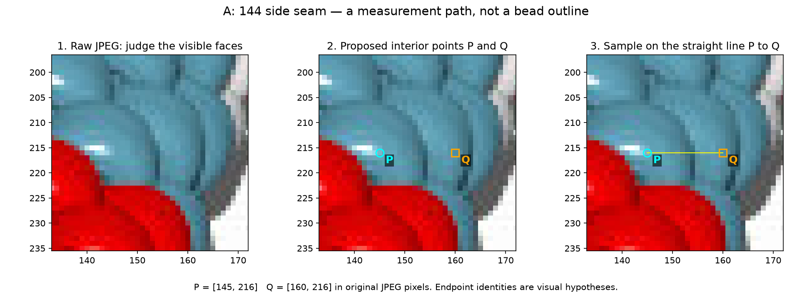
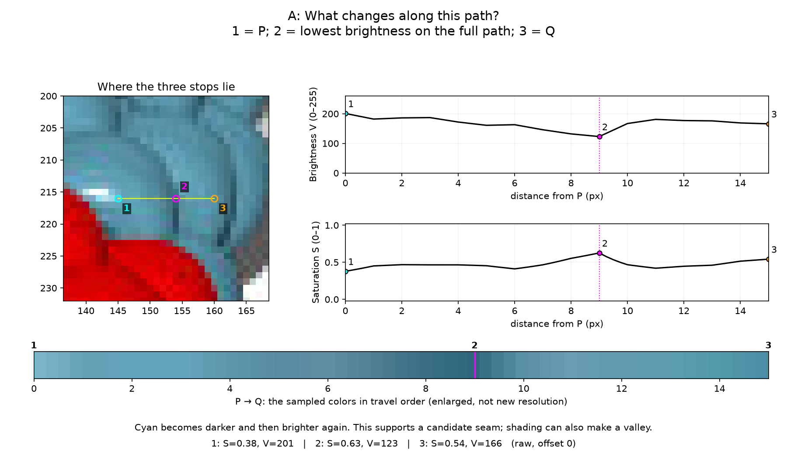
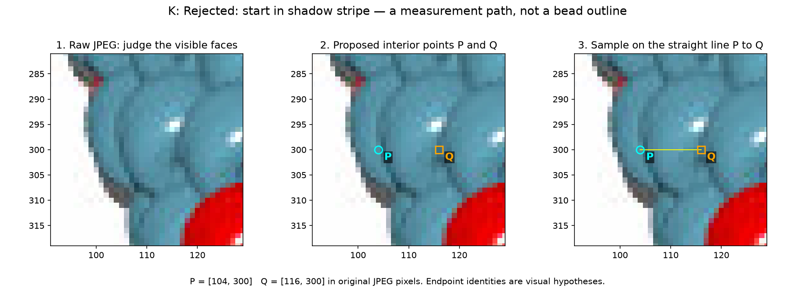
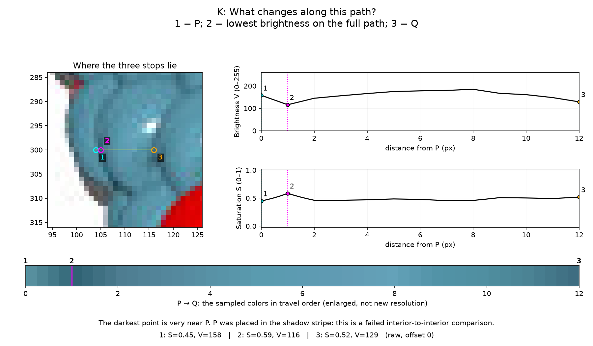
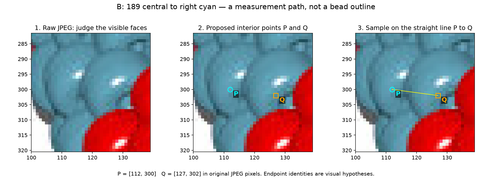
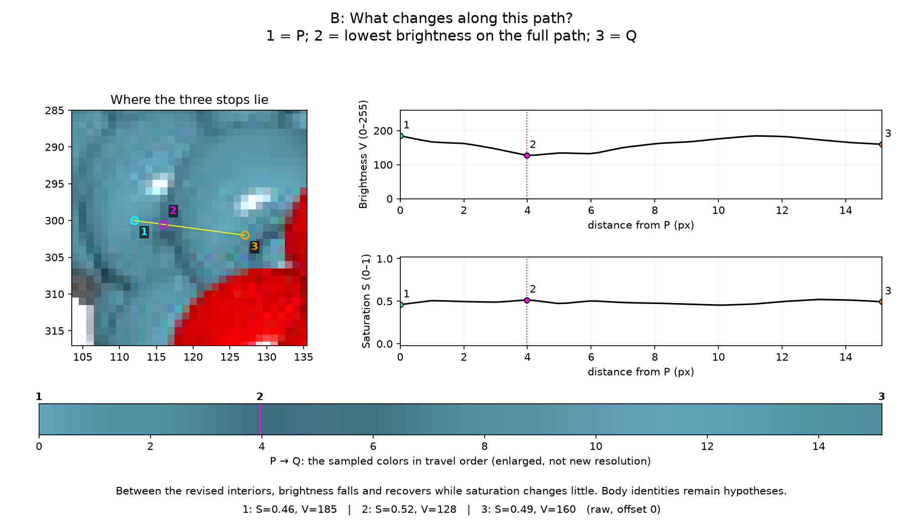
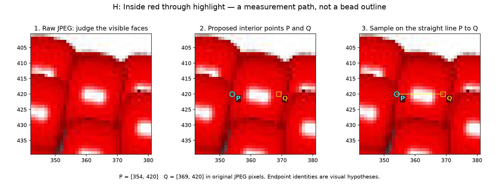
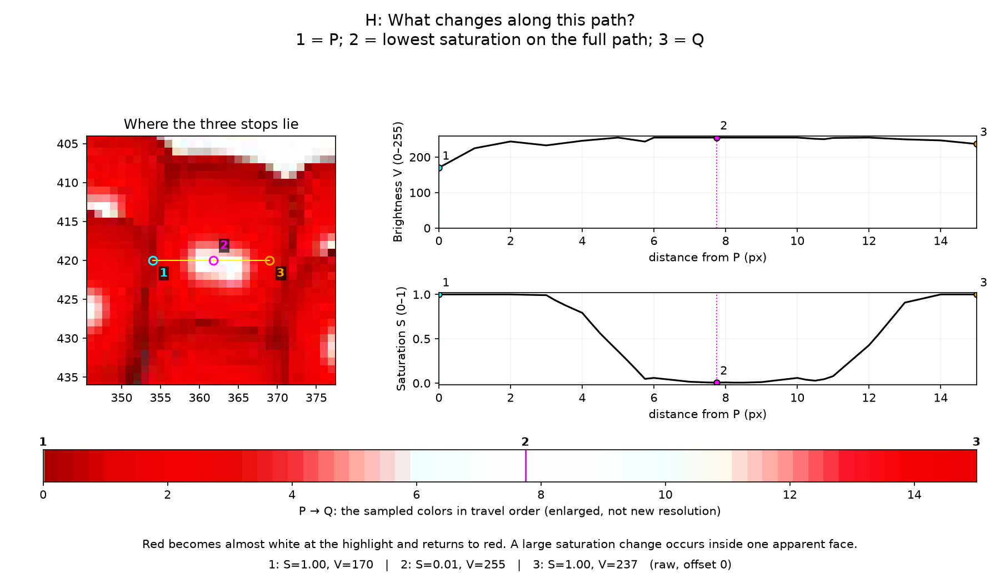
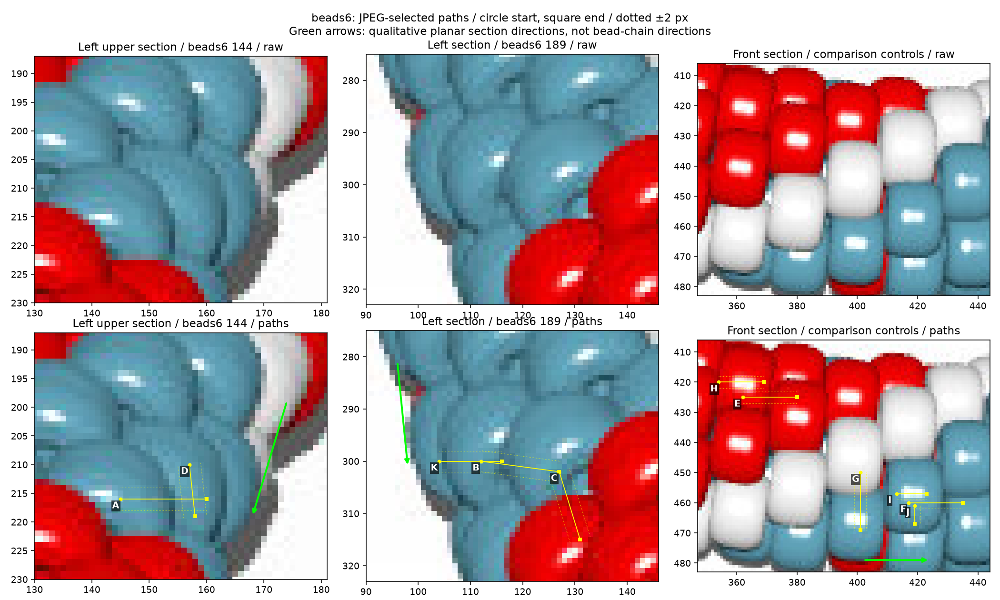
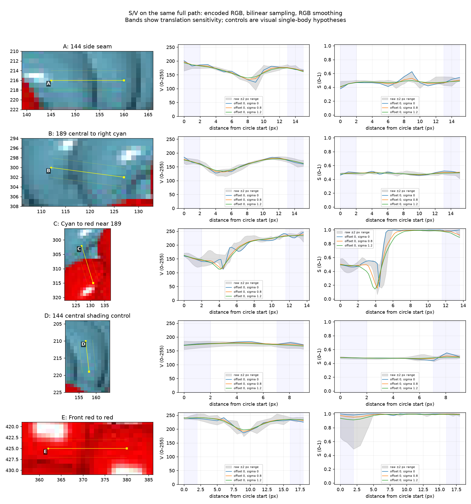
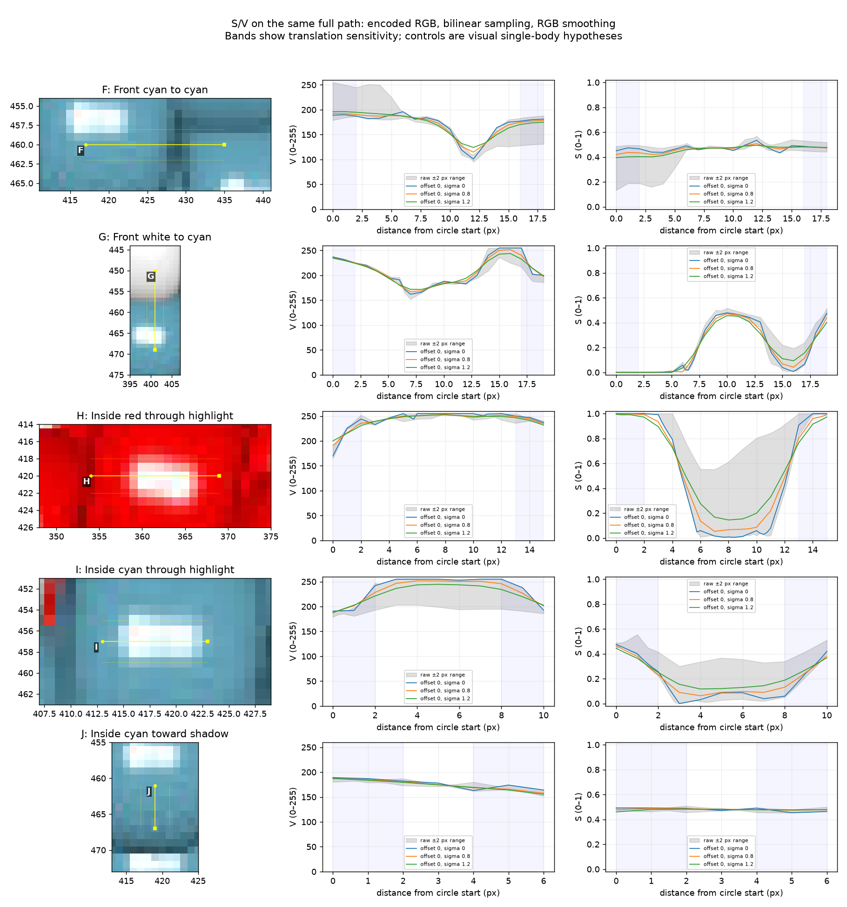
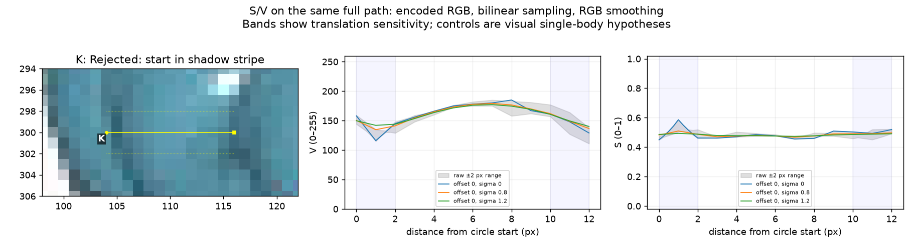
All RGB/S/V samples · Descriptive measurements · Hashes and parameters